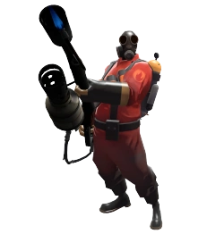
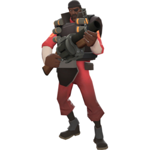
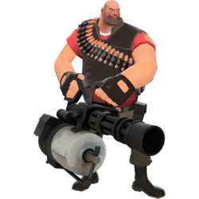
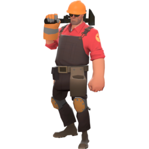
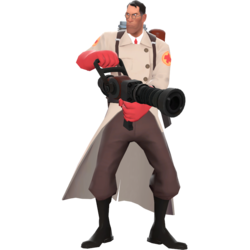
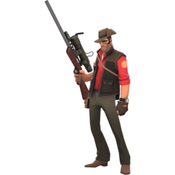
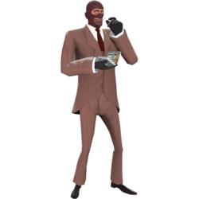

Основная информация
Team Fortress — это культовая серия командных многопользовательских шутеров от первого лица, начавшаяся с мода для Quake в 1996 году и ставшая популярной благодаря Team Fortress 2 от Valve. Игра строится на противостоянии двух команд (RED и BLU), где девять уникальных классов используют свои сильные стороны для выполнения целей на картах
Основные игры серии
Team Fortress (1996): Модификация для оригинальной игры Qu, которая ввела понятие командных классов.Team Fortress Classic (1999): Перенос оригинального мода на движок GoldSrc от Valve Corporation.Team Fortress 2 (2007): Главная игра серии с узнаваемым мультяшным стилем, сильной комедийной составляющей и глубокой тактической механикой.
Девять классов персонажей
Все персонажи делятся на три роли:Атака: Разведчик (Scout), Солдат (Soldier), Поджигатель (Pyro).Поддержка: Подрывник (Demoman), Пулеметчик (Heavy), Инженер (Engineer).Защита / Спецслужбы: Медик (Medic), Снайпер (Sniper), Шпион (Spy).
Скаут

быстрые бойцы из Бостона, использующие тактику «ударь и беги». Они вооружены обрезом, пистолетом и битой, имеют высокий темп передвижения, но обладают малым запасом здоровья, что требует постоянного движения на поле боя.
- Основные Характеристики
- Здоровье: 125 единиц (один из самых низких показателей в игре).
- Скорость: 133% от базовой скорости (самый быстрый класс).
- Класс: атакующий, самый быстрый в игре
- Игровая Роль
- Захват точек: Считается за двух человек при захвате контрольных точек и тележки.
- Фланги: Идеален для внезапных атак с тыла и уничтожения одиночных целей (например, вражеских снайперов или медиков).
- Мобильность: Двойной прыжок позволяет занимать высокие позиции и уворачиваться от вражеского огня.
Солдат

Солдат в Team Fortress 2 — это сильный, живучий и простой в освоении класс американского патриота, вооруженный ракетницей. Он имеет 200 единиц здоровья, наносит большой урон по площади и умеет делать реактивные прыжки (рокет-джампы), что делает его отличным выбором как для новичков, так и для ветеранов.
- Основные характеристики
- Здоровье: 200 HP (до 300 при сверхлечении).
- Скорость: 80% от стандартной скорости разведчика.
- Роль: Нападение, поддержка и прорыв обороны.
- Озвучка: Легендарный голос покойного актёра Рика Мэя. Настоящее имя (по данным на почтовом ящике) — Джейн Доу.
- Игровая роль
- Ударь и беги: Солдат использует рокетджамп для внезапного налета сверху, наносит огромный урон ракетами и быстро улетает обратно.
- Фланговые атаки: Занимает высокие позиции и обстреливает врагов с неожиданных углов, пока они отвлечены.
- Охота за целями: Идеально уничтожает скопления врагов и ломает постройки Инженера.
Пиро

Пиро (Поджигатель) в Team Fortress 2 — это безумный пироман в асбестовом костюме и противогазе, чьё лицо, имя и пол остаются главной загадкой игры. Он вооружён огнеметом, наносит урон огнем и догоранием, а также видит мир в виде доброй и красочной «Пироландии».
- Основные характеристики
- Здоровье: 175 единиц.
- Роль: Ближний бой, атака и поддержка (тушение союзников и отражение снарядов сжатым воздухом).
- Особенности: Полное отсутствие понятной речи (лишь приглушенное бормотание под противогазом).
- Игровая роль
- Ближний бой и хаос: Поджог групп противников и нанесение урона от горения, заставляющий врагов паниковать или отступать за аптечками.
- Борьба со Шпионами: Постоянное «опыление» огнём союзников и углов, чтобы мгновенно разоблачать замаскированных или невидимых шпионов.
- Отражение снарядов (Аирбласт): Спасение команды от ракет Солдата и липучек Подрывника с помощью сжатого воздуха, отправляя их обратно во врагов.
- Поддержка и тушение: Тушение загоревшихся тиммейтов потоком воздуха и сбивание убер-заряда у вражеского Медика (отталкиванием).
Подрывник

Подрывник (Demoman) в Team Fortress 2 — это шотландский наемник по имени Тавиш ДеГрут, мастер взрывчатки и одноглазый циклоп. Он отлично контролирует территорию, наносит огромный урон на средней дистанции и может уничтожать врагов пачками с помощью гранатомета и липучкомета
- Основные характеристики
- Здоровье (ХП): 175 ед. (Максимальное сверхлечение — 260 ед.)
- Скорость: 93% от средней (300 единиц в секунду)
- Роль: Защита / Атака
- Происхождение: Аллапул, Шотландия
- Оружие: Гранатомет (основное), липучкомет (дополнительное), бутылка или меч (ближний бой)
- Особенность: Умеет делать «липучка-джампы» (прыжки на взрывах) и играть в стиле рыцаря со щитом и мечом
- Игровая роль
- Прорыв обороны: Уничтожение вражеских турелей, раздатчиков и сдерживающих позиций противника из-за укрытий по навесной траектории.
- Контроль территории: Установка ловушек из липких бомб в узких коридорах, на точках захвата или тележках, чтобы не пустить врага.
- Нанесение урона (Damage Dealer): Подавление штурма противника за счет высокого урона гранатами и липучками на средней дистанции.
Пулемётчик

Пулемётчик (англ. Heavy) — это огромный грозный боец родом из СССР, являющийся самым прочным и «лицом» игры Team Fortress 2. Обладая запасом здоровья в 300 единиц, он сносит врагов шквальным огнем из своего любимого 150-килограммового пулемёта, которого ласково зовет «Саша».
- Основные характеристики
- Здоровье: 300 HP (самый высокий показатель в игре, у Медика с уколом — до 450).
- Скорость передвижения: 77% от нормы (самый медленный класс в режиме стрельбы/раскрутки).
- Роль: Оборона, прорыв точки, подавление огневой мощи.
- Игровая роль
- Танк и опора команды: Принимает на себя основной урон, прикрывая союзников массивным телом и щитом из здоровья.
- Оборона точек: Идеально удерживает контрольные точки и тележки, перекрывая узкие проходы шквальным огнём.
- Убийство целей (Твоя главная мишень): Быстро уничтожает врагов на ближней и средней дистанциях, особенно эффективен против шпионов, разведчиков и других атакующих классов.
Инженер

Инженер (настоящее имя — Делл Конагер) — это защитный класс в игре Team Fortress 2 родом из Техаса. Он обладает 11 докторскими степенями и может возводить полезные механизмы для помощи команде, используя металл. У него 125 единиц здоровья и средняя скорость передвижения.
- Основные характеристики
- Здоровье: 125 HP
- Скорость: 100% (нормальная, как у большинства)
- Роль: Поддержка, оборона, контроль территории
- Родина: Би-Кейв, Техас, США
- Игровая роль
- Контроль и оборона: Сдерживает продвижение врагов в узких проходах и на стратегических точках.
- Поддержка тыла: Обеспечивает команду лечением, патронами и быстрой переброской на передовую.
- Зависимость от металла: Для возведения, починки и улучшения всех механизмов требуется ресурс — металл.
Медик

Медик в Team Fortress 2 — это класс поддержки родом из Германии, чей главный долг — лечить союзников и копить мощный Убер-заряд. У него 150 единиц здоровья, средняя скорость передвижения и безумный характер.
- Основные характеристики
- Роль: Поддержка / Лечение команды.
- Здоровье: 150 HP (до 225 при сверхлечении).
- Скорость: Базовая скорость Медика в Team Fortress 2 составляет 107% от стандартной (320 юнитов в секунду).
- Особенность: Медленно восстанавливает собственное здоровье со временем (пассивная регенерация).
- Игровая роль
- Лечение: Восстанавливает здоровье союзников с помощью лечебной пушки (меди-гана). Раненые бойцы лечатся быстрее.
- Убер-заряд (ÜberCharge): При лечении шкала заряда заполняется. Активация убер-заряда делает Медика и его пациента неуязвимыми на 8 секунд или дает тройной урон (с Крицкригом).
- Помощь атаке: Сопровождает мощные классы (Солдата, Пулемётчика, Поджигателя), усиливая их в лобовых столкновениях.
- Медик — главная цель врагов. Умение вовремя отступить и не умирать — залог победы команды.
Снайпер

Снайпер в Team Fortress 2 — это класс дальнего боя с базовым здоровьем 125 единиц, наносящий смертоносный урон в голову из снайперской винтовки. Его главная роль — устранять ключевых врагов издалека, разрушая оборону и прикрывать свою команду
- Основные характеристики
- Здоровье: 125 HP (один из самых низких показателей в игре, уязвим для атак в лоб).
- Скорость: 100% (стандартная скорость передвижения, но при прицеливании она сильно падает).
- Игровая роль
- Устранение приоритетных целей: Быстрое уничтожение вражеских медиков с убер-зарядом, вражеских снайперов и инженеров с постройками.
- Контроль пространства: Удержание ключевых зон и проходов на больших открытых дистанциях. Враги боятся выходить на открытую линию огня.
- Ослабление наступающей вражеской группы с помощью Банкате или нанесение урона по ключевым бойцам противника из тыла.
Шпион

Шпион в Team Fortress 2 — это класс скрытного убийцы и диверсанта с 125 единицами здоровья. Его главные особенности — полная невидимость, маскировка под любой класс и мгновенное убийство ударом в спину. Роль в игре — устранение ключевых врагов (Медиков, Снайперов) и уничтожение построек Инженера.
- Основные характеристики
- Здоровье: 125 HP (одно из самых низких в игре).
- Скорость: 100% от базовой (как у снайпера, инженера и пиро). Подстраивается под скорость медленных классов, если выбрана их маскировка.
- Способности: Часы невидимости, маскировочный набор под команду врага и жучок для выведения из строя построек инженера.
- Игровая роль
- Убийство приоритетных целей: Устранение вражеского Медика с готовым убер-зарядом или назойливого Снайпера.
- Саботаж инженеров: Установка жучков на турели и раздатчики, чтобы парализовать оборону соперника.
- Дезорганизация тыла: Создание паники в рядах противника, заставляя его постоянно оглядываться и тратить время на проверки союзников.